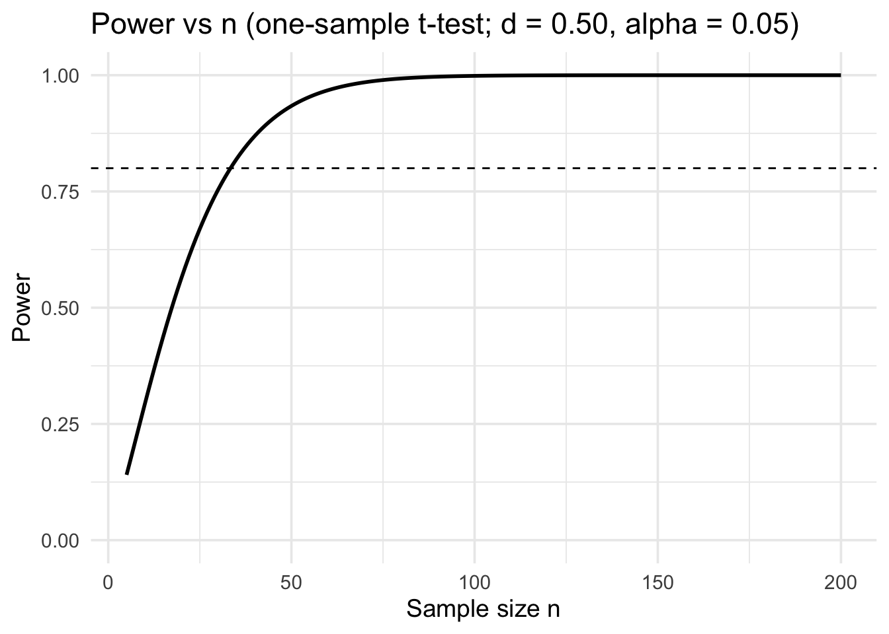

Why can we not sacrifice the randomisation assumption in significance testing?
Explain the difference between a significance test and a confidence interval.
Explain the relationship between the desired \(\alpha\) level and the Type I and II Errors.
What are the differences between a one- and a two-sided significance test? Give an example for each.
Please stop here and don’t go beyond this point until we have compared notes on your answers.
The t-distribution
As you have seen in the lecture, the t-distribution is fundamental to conducting tests of statistical significance. Here are some exercises to familiarise yourself with the distribution. Please use the app below to find your answers.
How the degrees of freedom \(df\) change the shape and critical values
Set tail type = two-tailed and \(\alpha = 0.05\). Move \(n\) from 3 to 50 (\(df\) from 2 to 49). Record the critical values \(t_{\mathrm{crit}}\) at \(n \in \{3, 5, 10, 20, 50\}\).
Compare these to the normal critical value \(z_{0.025} \approx 1.960\).
Which \(n\) (or \(df\)) makes \(t_{\mathrm{crit}}\) within 0.05 of 1.96?
Explain why \(t\) approaches the standard normal as \(df \to \infty\).
One-tailed vs two-tailed critical regions
Fix \(df = 14\). Toggle between two-tailed and one-tailed (upper) with \(\alpha = 0.05\).
Note the two cutpoints for the two-tailed test (\(\pm t_{0.025,14}\)) and
the single cutpoint for the one-tailed test (\(t_{0.05,14}\)).
For a test with \(H_0: \mu = \mu_0\) and \(H_1: \mu > \mu_0\), which cutpoint is relevant and why?
Verify with shading that the total shaded probability equals \(\alpha\) in each case.
How effect size, sample size, and power shape inference
In statistical inference we care about two questions:
Is there evidence of a real effect? (a hypothesis test / \(p\)-value question)
How big is the effect, and is it meaningful? (an effect size / estimation question)
Three ideas determine how confidently we can answer these:
Effect size: the magnitude of the difference or relationship. Larger effects are easier to spot and usually more practically important.
Sample size (\(n\)): how much data we have. Bigger \(n\) reduces sampling noise, tightens confidence intervals, and increases the chance of detecting real effects.
Power (aka “Sensitivity”): the probability that a test will detect a true effect (reject \(H_0\) when it is false). Power grows with larger effects and larger samples, and shrinks when you demand stronger evidence (smaller \(\alpha\)) or when variability is high.
It is important to consider effect size, sample size, and statistical power together when designing or interpreting a study. A very small effect can become statistically significant with a sufficiently large \(n\), yet still be of little practical importance. Przeworski et al. (2000) and Boix & Stokes (2003), for example, agree “that the impact of GDP on democratization in the postwar period is negligible, even though it may be statistically significant.” (Epstein et al., 2006) Conversely, with too small a sample, even a moderate effect may fail to reach significance simply because statistical power is inadequate. Good study planning therefore requires balancing the smallest effect that is considered meaningful (the minimum important difference) against a sample size that provides adequate power at the chosen significance level \(\alpha\). As a rough guide, I have summarised some scenarios for the interplay of effect size and sample size on statistical power.
Effect Size
Sample Size
Likely Outcome
Large
Small
May still detect effect
Small
Large
Likely to detect even small effect
Small
Small
Low power – may miss real effect
Large
Large
High chance of detecting effect
Table 1: Rule-of-thumb scenarios
What is Cohen’s \(d\)?
To measure effect size, we will be using Cohen’s \(d\). Cohen’s \(d\) is a way of describing how big an effect is, in units that don’t depend on the original scale. Let me explain this by comparing how far the average exam mark (42) from a sample of students is to the pass mark of 40. In short, instead of saying “the mean was 42 vs the null value of 40”, we will ask: “how big is that 2-point shift compared to the typical variation in marks?”
We start by identifying the observed difference. With a sample mean of 42 (mean indeed!) and a null hypothesis value of 40, the observed difference is
\[
\text{Difference} = 42 - 40 = 2
\]
This raw difference might seem informative at first glance, but it will be hard to compare this across different contexts. Why? Suppose we look at exam marks in two different modules. In course A students’ marks are close bunched together, most within about 5 points of the average. In this setting, a 2-point increase is fairly big compared to the usual spread. In module B, meanwhile, students’ marks vary a lot, often 20 points above or below the average. In this setting, the same 2-point increase is tiny compared to the usual spread.
This is why we cannot stop at raw differences – we need to find a way to standardise the difference so that we can compare across different contexts. And this is precisely what Cohen’s \(d\) does. It is defined as
\[
d = \frac{\bar x - \mu_0}{\text{s}}
\]
where \(\mu_0\) is the null hypothesis value. This formula standardises the raw distance by dividing it by the standard deviation (s) of marks.
To continue with our example, if the typical standard deviation of exam marks is about 10 points, then:
So our observed effect is \(d = 0.20\). How do we interpret this result? Cohen (2013) suggested some rough rules of thumb for interpreting \(d\):
Interpretation
\(d \approx 0.2 \Rightarrow\) small effect (a subtle shift, often hard to detect)
\(d \approx 0.5 \Rightarrow\) medium effect (a clear, noticeable shift)
\(d \approx 0.8 \Rightarrow\) large effect (a big, obvious shift)
Note that these are rough guidelines, only. The onus is on you as a researcher to judge what is required/acceptable in the context of your project.
A value of \(d = 0.20\) in our example means the average mark is 0.2 standard deviations above the null value. That is considered a small effect: the group did a little better than the pass mark, but the difference is modest relative to the variability in marks.
In summary, Cohen’s \(d\) encourages us to think not just about whether an effect exists, but whether it is meaningfully large. We are now going to use it to determine the statistical power of a one-sample significance test. You will see that smaller \(d\) values need larger sample sizes to be detected reliably.
What is statistical power?
Statistical power is the probability that a study will detect an effect if the effect really exists. Formally, we can write this as:
High power means we are likely to detect real effects.
Low power means we might miss them, even if they exist.
A common benchmark is 80% power (see Lakens (2013) and Button et al. (2013)), which means: if the true effect is at least as big as the one we are testing for, then in the long run we would detect it in 80% of studies with the same sample size and test procedure.
But how do we get from \(d\) to power? The link is through the t-statistic. When you read the fomula and description for Cohen’s \(d\) earlier, you might have had a deja-vue, because the t-score is defined as
\[
t = \frac{\bar x - \mu_0}{\text{se}}, \qquad \text{where se}=\frac{s}{\sqrt{n}}
\]
This means that \(t\) and \(d\) are very closely related, namely through this little exercise in algebra:
\(d\) tells us the size of the effect relative to the spread.
\(\sqrt{n}\) tells us how sample size sharpens our estimate: larger \(n\) shrinks sampling noise.
So for a fixed \(d\), increasing \(n\) makes \(t\) larger and pushes us past the critical threshold for significance more often — which is exactly what raises power. The key is that statistical power is defined as the probability of correctly rejecting the null when the effect size is truly \(d\). Equivalently, it is the probability that the test statistic \(t\), which depends on both \(d\) and \(n\), will exceed the critical cut-off. Thus, as \(n\) increases, the distribution of \(t\) shifts further into the rejection region, and the probability of crossing the cut-off – the power – goes up.
The calculation of power itself is slightly beyond the scope of an introductory level module, because we need a different distribution, a noncentral \(t\) distribution to be precise, for this purpose. Instead, I have designed an app which calculates this automatically for you (see below). What might be interesting to know in the context of the lecture, however, is that it is equal to \(1-\beta\) where \(\beta\) is the Type II Error. Let’s conclude this section with the following statements:
For a small effect (\(d = 0.20\)), increasing \(n\) pushes \(t\) upward by \(\sqrt{n}\).
With small \(n\), sampling noise keeps \(t\) below the cut-off most of the time (low power).
With larger \(n\), the standard error shrinks, \(t\) grows, and power increases.
In terms of the exam example, you could use this information for planning a survey: if you care about detecting a small but meaningful 2-point difference, you generally need larger samples than 25 – often well above 100 – to achieve comfortable power (for example, around 80%).
An Application
To illustrate how this works in practice, I have written an application that lets you evaluate a completed one-sample t-test and plan a replication. You enter the results you observed in that test, and the app shows the statistical power at your observed \(n\) (two-sided, at your chosen \(\alpha\)). As a special feature, you can switch to the “smallest effect size of interest” (SESOI), which lets you plan the \(n\) required for a meaningful effect.
Here is how to use it:
Enter the observed t-statistic and the observed sample size \(n\).
Choose \(\alpha\) (significance level).
Interpret the statistical power of your test.
Optional: turn on SESOI and pick a Cohen’s \(d\) (Small \(\approx 0.2\), Medium \(\approx 0.5\), Large \(\approx 0.8\)).
SESOI tells the app that only effects at least this big are meaningful.
If SESOI is off, the app uses the observed effect \(\hat d = t/\sqrt{n}\).
If SESOI is on, the app fixes the curve at your chosen \(d\) and, for convenience, shows the required \(n\) for 80% power as an orange dotted line.
In order to choose \(d\) appropriately, pick a minimum meaningful change in real units and divide by a typical standard deviation. For example, if you think that a difference of 2 exam points from an assumed null value (such as the fail mark of 40) matters and the SD is about 10, then \(d \approx 2/10 = 0.2\) (small).
How the “Power vs n” curve is calculated
When you choose a fixed standardized effect size \(d\) (either your observed \(\hat d = \tfrac{t}{\sqrt{n_{\text{obs}}}}\) or a SESOI), the curve shows the power of a two-sided one-sample \(t\)-test across many candidate sample sizes \(n\).
where \(F_{\text{nct}}\) is the CDF of the noncentral \(t\) distribution.
What the curve means
SESOI off: The curve treats the observed \(\hat d = t_{\text{obs}}/\sqrt{n_{\text{obs}}}\) as the “true” effect and shows how power would change if you repeated the study with different \(n\).
SESOI on: The curve instead uses your chosen meaningful effect size \(d\). In this mode, the app also shows the required \(n\) to reach 80% power with an orange marker.
Reproducing the curve in R
library(tidyverse)# Power of a two-sided one-sample t-test via the noncentral t distributionpower_one_sample <-function(d, n, alpha =0.05) { df <- n -1 tcrit <-qt(1- alpha/2, df = df) delta <- d *sqrt(n) p_upper <-1-pt(tcrit, df = df, ncp = delta) p_lower <-pt(-tcrit, df = df, ncp = delta) p_upper + p_lower}# Example settingsalpha <-0.05d_use <-0.50# e.g., "medium" SESOI; or d_use <- tobs/sqrt(nobs)n_seq <-5:200# Compute the curvepower_vals <-sapply(n_seq, power_one_sample, d = d_use, alpha = alpha)df_curve <-data.frame(n = n_seq, power = power_vals)# Optional: check against power.t.test at a single nn_check <-30p1 <-power_one_sample(d = d_use, n = n_check, alpha = alpha)p2 <- stats::power.t.test(n = n_check, delta = d_use, sd =1,sig.level = alpha, type ="one.sample", alternative ="two.sided")$powersprintf("Check at n=%d: custom=%.4f, power.t.test=%.4f", n_check, p1, p2)
[1] "Check at n=30: custom=0.7540, power.t.test=0.7540"
# Plot the curveggplot(df_curve, aes(n, power)) +geom_line(linewidth =1) +geom_hline(yintercept =0.80, linetype =2) +coord_cartesian(ylim =c(0, 1)) +labs(title =sprintf("Power vs n (one-sample t-test; d = %.2f, alpha = %.2f)", d_use, alpha),x ="Sample size n",y ="Power" ) +theme_minimal(base_size =14)

Why sd = 1 in the check? Because Cohen’s \(d\) is already standardized (\(d = \Delta/\sigma\)). The function power.t.test expects the unstandardized difference \(\Delta\) and the population standard deviation \(\sigma\). Setting sd = 1 and delta = d makes the inputs consistent with a standardized effect size.
How to read the Power vs \(n\) plot
Axes and lines
X-axis: sample size \(n\) (one-sample test).
Y-axis: power (0 to 1).
Solid curve: analytical power for the current effect and \(\alpha\).
With SESOI off: uses \(\hat d = t/\sqrt{n_{\text{obs}}}\).
With SESOI on: uses your chosen \(d\) (SESOI).
Dashed horizontal line at 0.80: a common 80% power target.
Dotted vertical line (grey): your observed \(n\); the dot shows power at that \(n\).
Dotted vertical line (orange): shown only when SESOI is on; marks the smallest \(n\) that reaches 0.80 power (labelled as \(n \approx \dots\) @ 80% power).
Finding the sample size you need
With SESOI on, read the orange line and label to get the sample size to plan for 80% power at your chosen \(\alpha\).
If the curve never hits 0.80 within the plot range, you would need a larger \(n\), a larger meaningful effect (bigger \(|d|\)), a one-sided test (only if justified), or a larger \(\alpha\) (with caution).
How the controls shift the curve
Larger \(|d|\) moves the curve up and left (fewer \(n\) needed).
Increasing \(\alpha\) (for example, 0.10 vs 0.05) moves the curve up; decreasing \(\alpha\) moves it down.
Changing the observed \(t\) or \(n\) with SESOI off updates \(\hat d\) and thus the curve. With SESOI on, the curve stays fixed by your chosen \(d\); changing \(n\) only moves the dot.
Shape and diminishing returns
The curve is steepest at small \(n\) and flattens as power approaches 1.
Because \(t = d\sqrt{n}\), halving \(|d|\) typically requires about four times the \(n\) to maintain similar power.
Interpreting the dot and the lines
The dot is your current power at the observed \(n\).
If the dot is below 0.80, you likely need a bigger \(n\) (or a larger \(d\) of interest, higher \(\alpha\), or a justified one-sided test).
Remember
Power is the probability to reject the null-hypothesis given that an effect exists, or formally \(P(\text{reject } H_0 \mid \text{effect exists})\). It is not a \(p\)-value and not the probability that \(H_0\) is true.
You can pair power planning with a SESOI: decide what \(d\) would be meaningful in your context and size your study to detect it.
What this means in practice:
That a result is statistically significant does not mean that it is practically important. With very large \(n\), even tiny effects can be significant.
Equally, insignificant results do no mean “no true effect”. With small \(n\), a real effect can be missed because power is low.
Exercises
Interpreting Significance Tests
In these exercises, and when reporting statistical results more generally, you’ll be required to interpret the outcome of a significance test. To do this well, it’s important to use language that reflects what null hypothesis significance testing (NHST) actually tells us, without overstating what the test can conclude.
NHST works by starting with the null hypothesis - usually a claim like “there is no effect” or “there is no difference”. We use the data to test whether that assumption is plausible. If the p-value is small, it means that results as extreme as the one we observed — or more extreme — would be rare if the null hypothesis were true. So, we take that as evidence against the null. But if the p-value is large, then the data are consistent with the null. And that’s where your interpretation should stop (at least at the introductory level, to avoid stretching and overstating).
There are two possible outcomes of a significance test: (1) your p-value is below the required significance level, and (2) your p-value is above the required significance level. Let’s look at these in turn:
If your p-value is below the required significance level, you can say things like:
“There is evidence of an effect.”
“We reject the null hypothesis.”
“The data provide evidence against the null hypothesis.”
“There is statistically significant evidence of a difference (or relationship, or effect).”
Avoid phrasing that implies certainty, such as:
🚫 “We proved the alternative hypothesis.”
🚫 “We proved that there is an effect.”
🚫 “We accept the alternative hypothesis.”
If your p-value is above the required significance level to reject the null hypothesis, you can say things like:
“There is insufficient evidence for an effect (of a difference, for a relationship).”
“We cannot reject the null hypothesis.”
“We fail to reject the null hypothesis.”
“The results are consistent with the null hypothesis.”
Avoid phrasing that overstates what the test can tell you, such as:
🚫 “We proved the null hypothesis.”
🚫 “We reject the alternative hypothesis.”
🚫 “The null hypothesis is true.”
Having taught quantitative political analysis for many years, I know that students love to use the word “prove” when they interpret their results. But there is no proof in significance testing, because we deal with probability statements, not certainty.
Conceptual - Working with the App
Same effect size, different n (mapping \(t\), \(n\), and \(\hat d\))
Set observed \(t=1.6\) and \(n=16\). Note \(\hat d = t/\sqrt{n}\) and the power at the observed \(n\).
Now keep \(\hat d\) the same but increase \(n\): set \(n=64\) and \(t=3.2\) (since \(t = d \times \sqrt{n}\)). Confirm that \(\hat d\) is unchanged while power increases.
Explain why power rises with \(n\) even when the underlying effect size \(\hat d\) stays the same.
Planning with a SESOI and \(\alpha\) sensitivity
Enter \(t=2.0\) and \(n=30\) (\(\alpha=0.05\)). Record \(\hat d\) and the power at the observed \(n\).
Turn on “Use smallest effect size of interest” and choose SESOI \(d=0.5\). Read the orange marker: the required \(n\) for \(80\%\) power at \(\alpha=0.05\).
Change \(\alpha\) to \(0.10\) and then to \(0.01\). How does the required \(n\) for \(80\%\) power shift as \(\alpha\) changes? Explain why a stricter \(\alpha\) requires a larger \(n\) for the same power.
Was the study well powered? Post-hoc check and replication planning
Suppose your study reported \(t=2.1\) with \(n=25\) at \(\alpha=0.05\). Enter these and record \(\hat d\) and the power at the observed \(n\). Is the power comfortably high?
If you wanted \(80\%\) power to detect an effect around this magnitude in a replication, turn on SESOI and choose the closest option to your \(\hat d\) (for example, Small \(d=0.2\) if \(\hat d\) is small, Medium \(d=0.5\) if \(\hat d \approx 0.5\)). Note the orange “\(n\) for \(80\%\) power” marker.
Explain why a significant result with low power can be fragile, and how choosing a SESOI (a target \(d\)) helps you plan a more reliable replication sample size.
R Exercises
These exercises will use the ks2.csv dataset. This data comprises fictitious2 average grades of Key Stage 2 (KS2) students in the UK, with 1,980 KS2 students’ test scores being included for reading (reading), mathematics (maths), and grammar, punctuation, and spelling (gps), as well as the mean of these three test scores (avg\_all). The test scores have been standardised, with 80 representing the lowest possible mark, 120 representing the highest possible mark, 100 representing the minimum passing mark, and -1 representing an ungraded test.
Load the ks2.csv dataset into R. Remove any observations that have any ungraded test scores.
Calculate the means and standard deviations of each of the three subjects. Write a brief description of the insights that can be drawn from these values.
Conduct a t-test to see if the means of each of the three subjects’ marks are statistically different from 100 at the 95% confidence level. Identify three ways that suggest statistically significant or insignificant differences.
Conduct a t-test to see if the mean of the average score of the three tests is statistically less than 105 at the 99% confidence level. Interpret the results.
The following questions will look at students’ English abilities generally.
Create a new variable called english, which consists of the average of the reading and grammar, punctuation, and spelling variables.
Conduct a t-test to see if the mean of the average score of the new English variable is statistically less than 105 at the 99.9% confidence level. Interpret the results.
Conduct a t-test to see if the mean of the average score of the new English variable is statistically different from 105 at the 99.9% confidence level. Interpret the results.
Is the any difference in the interpretation between the two above tests? Are there any differences in the results? Why?
You are tasked with investing the performance of students who passed in mathematics those who did not. For the following tests, use a 95% confidence level.
Create a binary variable that has two categories: those who passed mathematics (100 \(\leq\) mark) and those who failed mathematics (mark \(<\) 100).
Conduct a proportion test to see if the proportion of students that fail mathematics is 10% or greater. Interpret the results.
Conduct a t-test on the group who fail mathematics to see if they, on average, have marks for English statistically less than 100. Interpret the results.
Conduct a t-test on the group who pass mathematics to see if they, on average, have marks for grammar, spelling, and punctuation statistically greater than 105. Interpret the results.
Now it is worth investigating how students who fail at least one subject perform.
Create a binary variable that has two categories: those who passed all three subjects (all marks greater than or equal to 100) and those who failed at least one subject (one or more marks less than 100).
It can be hypothesised that the group of students who failed will have a mean of all of the test marks significantly below the pass mark of 100. Test this and interpret the findings with respect to the statistical and practical significance of the test.
Imagine you are part of a team work working within the Department for Education, tasked with investigating this sample to produce recommendations for policymakers.
Normalise the variable that contains the average of all three marks by setting the lowest mark (80) to 0, the highest mark (120) to 100, and the minimum pass mark (100) to 50. Justify why it might be useful to normalise these marks to this scale for non-specialist policymakers.
Construct a categorical variable that consists of five categories: 0-49.99 (Fail), 50-59.99 (Pass), 60-60.99 (Merit), 70-79.99 (Distinction), and 80+ (Distinction+).
Answer the following questions but write your answers as if intended for a non-specialist policy making with no knowledge of statistics:
Are the averages of the Pass, Merit, and Distinction groups different from their middle marks (55, 65, and 75, respectively)? If so, which direction?
Is the average mark of the Distinction+ group lower than the maximum mark of the group?
Is the mean mark of the Fail group higher than the median mark of the group? Which skew does this indicate in the distribution?
Prepare a list of questions you have for the exam.
Glossary
Term
Description
critical value
The critical value is a threshold that determines the boundary for rejecting the null hypothesis (H\(_0\)) in a hypothesis test. It is a point on the probability distribution of the test statistic beyond which the null hypothesis is rejected. The critical value is chosen based on the significance level (\(\alpha\)) of the test, which represents the probability of making a Type I error (i.e., rejecting a true null hypothesis).
effect size
The magnitude of the difference or relationship. Larger effects are easier to spot and usually more practically important
hypothesis
In statistics, a hypothesis is a formal statement about a population parameter or relationship between variables. Hypotheses guide statistical tests to determine whether data support or refute them. The hypothesis suggesting an effect or difference is called the alternative hypothesis. The alternative hypothesis is always paired with a null-hypothesis, suggesting no effect or difference.
power
Also known as “sensitivity”. It is the probability that a test will detect a true effect (reject \(H_0\) when it is false). Power grows with larger effects and larger samples, and shrinks when you demand stronger evidence (smaller \(\alpha\)) or when variability is high
p-value
The p-value indicates the probability of obtaining a result equal to, or even more extreme than the observed value in the direction of the alternative hypothesis, assuming the null hypothesis is true. Common thresholds for significance are 0.05, 0.01, and 0.001. A smaller p-value suggests stronger evidence against the null hypothesis. The p-value is denoted as \(p\).
significance test
A significance test is a statistical method used to determine whether observed data provide enough evidence to reject a null hypothesis. It calculates a probability of observing data as extreme as, or more extreme than, the actual sample results, assuming the null hypothesis is true
test statistic
A test statistic is a value calculated from the sample data that is used to decide whether to reject the null hypothesis (H\(_0\)) in a hypothesis test. It quantifies the degree to which the observed data diverges from what is expected under the null hypothesis. In a t-test, the test statistic is a t-value, which measures the distance between the sample mean and the (hypothesised) population mean, expressed in units of standard errors.
Type I Error
A Type I Error occurs when a null hypothesis (H\(_0\)) that is actually true is incorrectly rejected. It is also known as a false positive errors, as it suggests that an effect of difference exists, when, in fact, it does not. The probability of committing a Type I Error is denoted by the significance level (\(\alpha\)) of the test, which is typically set before conducting the test (e.g. \(\alpha\) = 0.05). This means that there is a 5% chance of rejecting the true null hypothesis.
Type II Error
A Type II Error occurs when a null hypothesis (H\(_0\)) that is actually false is incorrectly accepted (or not rejected). It is also known as a false negative error, as it suggests that no effect or difference exists when, in fact, there is one.
Button, K. S., Ioannidis, J. P. A., Mokrysz, C., Nosek, B. A., Flint, J., Robinson, E. S. J., & Munafò, M. R. (2013). Power failure: Why small sample size undermines the reliability of neuroscience. Nature Reviews Neuroscience, 14(5), 365–376. https://doi.org/10.1038/nrn3475
Epstein, D. L., Bates, R., Goldstone, J., Kristensen, I., & O’Halloran, S. (2006). Democratic Transitions. American Journal of Political Science, 50(3), 551–569. https://doi.org/10.1111/j.1540-5907.2006.00201.x
Lakens, D. (2013). Calculating and reporting effect sizes to facilitate cumulative science: A practical primer for t-tests and ANOVAs. Frontiers in Psychology, 4. https://doi.org/10.3389/fpsyg.2013.00863
Linke, F. (forthcoming). Introduction to Quantitative Methods in the Social Sciences. Oxford: Oxford University Press.
Przeworski, A., Alvarez, M. E., Cheibub, J. A., & Limongi, F. (2000). Democracy and Development - Political Institutions and Well-Being in the World, 1950-1990. Cambridge: Cambridge University Press. https://doi.org/10.1017/CBO9780511804946
All exercises are a reproduction from Linke (forthcoming).↩︎
The means are based on KS2 scaled score averages which have been averaged over 2016-2019.↩︎